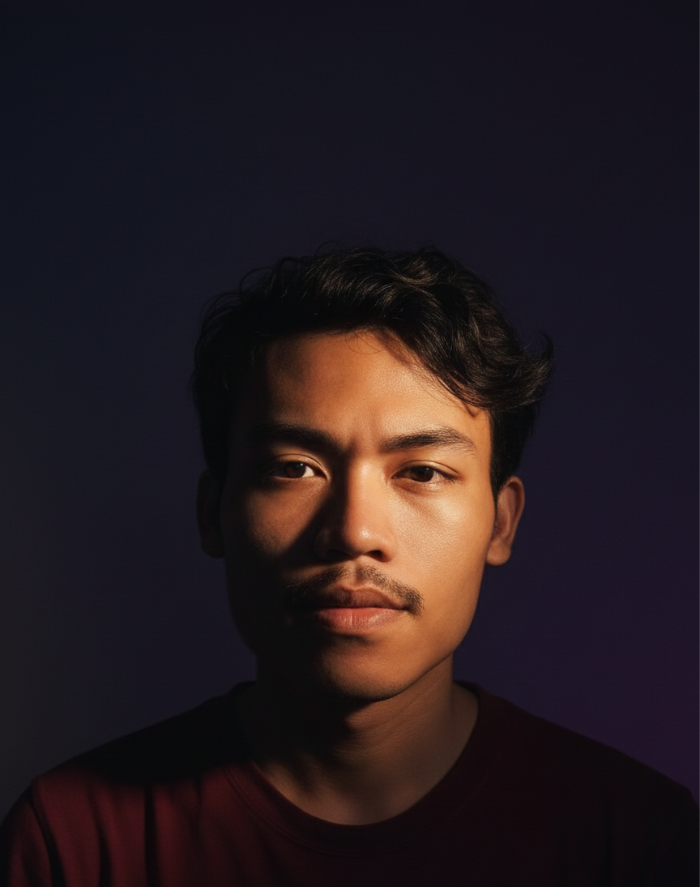

Digital Creator & AI Developer
Lihat ProfilP1: Halo! Nama saya Mohamad Firdaus, seorang Digital Creator dan Developer yang berbasis di Indonesia. Saya memiliki ketertarikan yang sangat mendalam pada dunia teknologi modern, pembuatan konten digital, serta pengembangan web interaktif.
P2: Perjalanan karir saya berfokus pada ekosistem digital kreatif, di mana saya aktif menggabungkan keahlian teknis pemrograman dasar dengan pemanfaatan teknologi Artificial Intelligence (AI) terkini untuk menghasilkan produk visual yang inovatif.
P3: Sebagai seorang profesional di bidang digital, saya memegang peran aktif dalam dunia pemasaran digital sebagai Affiliate Marketer di platform Lynk.id, membangun interaksi organik serta mengonversi traffic audiens lewat pendekatan konten kreatif.
P4: Dalam mengelola strategi pemasaran afiliasi, fokus utama saya adalah membangun teknik storytelling yang kuat di media sosial, menyajikan solusi naratif yang relevan untuk menjangkau pangsa pasar potensial secara lebih emosional dan terukur.
P5: Selain aspek marketing, saya mendedikasikan waktu yang cukup besar sebagai Digital Content Creator independen, mengeksplorasi pembuatan aset visual premium seperti rancangan logo token, media promosi video, hingga grafik sinematik mutakhir.
P6: Keahlian teknis saya mencakup pemahaman arsitektur dasar Web Development dengan mengandalkan integrasi HTML5, CSS3, dan JavaScript guna membangun antarmuka web portofolio yang tidak hanya dinamis namun juga responsif saat diakses dari HP.
P7: Saya percaya bahwa kolaborasi antara keahlian pemrograman web dan implementasi kecerdasan buatan akan menjadi pilar utama dalam industri kreatif di masa depan, memberikan efisiensi tinggi bagi pelaku industri dalam membangun representasi brand digital.
P8: Melalui portofolio digital yang sedang dalam tahap training dan pengembangan intensif ini, saya berusaha mendokumentasikan setiap pencapaian proyek, eksperimen kode, serta rekam jejak eksplorasi desain yang telah saya selesaikan.
P9: Saya selalu terbuka untuk mengeksplorasi kesempatan baru, membangun relasi profesional, serta berkolaborasi dalam berbagai proyek berskala kreatif maupun teknis demi menciptakan dampak digital yang lebih luas dan adaptif.
Pengembangan desain web portofolio responsif berbasis tema gelap, memanfaatkan teknik animasi transisi CSS murni serta navigasi menu sidebar yang presisi untuk layar HP.
Eksplorasi dan produksi aset visual sinematik berkualitas tinggi yang memanfaatkan teknologi kecerdasan buatan (AI) untuk kebutuhan konten promosi kreatif.
Penyusunan rencana kampanye dan pembuatan konten kreatif berbasis storytelling digital untuk mengoptimalkan jangkauan traffic organik pada platform Lynk.id.
Kumpulan eksperimen pengembangan front-end menggunakan editor A-Code, berfokus pada optimasi performa skrip animasi serta penerapan layout grid modern.